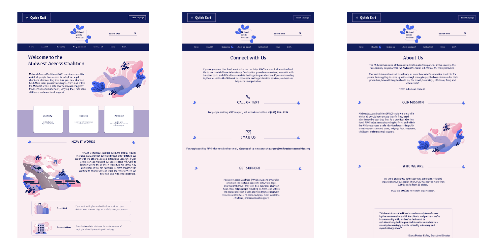

Midwest Access Coalition
Nonprofit Website Redesign

Project Description: With the overturning of Roe v. Wade, we want to provide services to a nonprofit that is supporting people who need safe access to abortion. The Midwest Access Coalition is based in Illinois, which is completely surrounded by states that have restricted access to safe abortion procedures and healthcare. We want to redesign this website to ensure that these specific resources are easily accessible and understandable to people who need them. .
Project Overview
M.A.C Original Website (midwestaccesscoaltion.org)
The Problem
Our initial impression of the website was its poor design. The navigation was confusing, and the overall look made it hard to read as well as find information. Our user testing focused on these issues, and sought to find out how we can help those in need of services have a more cohesive and informative experience on this site. Additionally, we took this opportunity to have a full cosmetic redesign, hoping the new look would be able to provide a more relaxing experience to its users.
The Solution
We started our research with 21 surveys, 5 interviews, and 8 usability tests. Our focus was to gauge what people look for most in non-profit websites, as well as their first impressions of the current M.A.C site. after 21 results we gathered that most look for a mission statement or purpose of origin first, and noted that it was missing that key statement. Also the general look of the site was off putting. The color choices as well as the font made people skeptical of the site, and their legitimacy. Our user tests confirmed that people were confused as to where the actual resources where, and how to make contact, leading to frustration and causing people to give up and leave the site. From there we knew where we had to pull focus.
My Team
Katie Kelly, Valerie Torres, and Elena Flordeliz Demet
My Role
Design: Color and styling, as well as creating illustrations.
Tools Used
Figma, Google Suite, Trello, Adobe Illustrator and Photoshop.
User Research
We conducted:
- 21 Survey Responses
- 5 Interviews
- 8 Usability Tests
Key Learnings:
- Users associate feeling good with non-profits but are cautious of their practices, especially from leadership.
- Users expect to be able to immediately and clearly find the mission and purpose of the organization.
- Users want non-profits to provide resouces about the procedure but also what to expect
before and after,
like safe sex education and mental health education.
Our Focus
User Journey Map
Concluding the problems from our research, we were able to focus on our target audience. Keeping in mind the services of the organization, we wanted to prioritize people in immediate need. Through our user persona we wanted to highlight the very real financial and emotional toll abortion restriction leaves on people, and focus on how nonprofits can provide an easy and seamless process during such an already difficult time.
Wireframes
Desktop Lo-Fidelity Wireframes
Mobile Lo-Fidelity Wireframes
Moving on to prototyping, we made sure to prioritize tab organization, and making sure the homepage was both visually appealing and clearly stated the mission statement without having to scroll. To aid in the visual aspects of the website, we decided to include illustrations to the redesign. Most abortion websites refrain from using pictures to protect patients and provide anonymity, so we hoped that adding illustrations would not only add to the design, but also establish some more visual hierarchy.
Hi-Fidelity Desktop Prototype
Hi-Fidelity Mobile Prototype
Our user tests were kept simple. Prioritizing if users could clearly identify the mission statement, and understand how to find services and contact information. While conducting user testing, we found that some of the recurring problems were people wondering how to check if they were qualified for aid and some language consistency problems. These minor issues were easy to fix, by providing an eligibility tab as well as adding a seperate tab for minors, as we realized that was an underrepresented minority of our user base. After that, our final round of user tests were met with 100% accuracy, as people were able to clearly identify the purpose of the website and find the aid provided.
Future Iterations

In conclusion, this project was an eye opening experience. Things as simple as color and visual hierarchy can be detrimental to the success of a website, and with just a few changes it really felt like it came to life. Given the time constraint, there were obviously a lot of things that we couldn't get to, but moving forward I would love to add more resources in general. Adding something like a resource page about abortion laws and how they differ from state to state to help keep users informed of their rights was one of the big ones we would have wanted to add if there was more time. The topic of reproductive rights is already so convoluted and continuing to get more challenging, having a more central place of information would be the most ideal for someone in need. Regardless, I am very proud of the final product my team and I were able to achieve.